DIUMENGE
20 D'OCTUBRE
15.30h
LA TROBADA - Barcelona Ciutat Diversa, Ajuntament de Barcelona
Passeig Lluís Companys - Arc de Triomf (Barcelona)
DISSABTE
26 D'OCTUBRE
18h
FESC2019
Carrer de Sant Adrià, 20 (Barcelona)
DIMARTS
5 DE NOVEMBRE
18h
ESPAI PLANA DE L'OM
Carrer del Born (Manresa)
DIVENDRES
20 DE DESEMBRE
18h
ATENEU POPULAR DE VILAMAJOR
(Vilamajor)
DIJOUS
27 DE JUNY
19h
Zumzeig Cinema, cinema cooperatiu
Carrer de Béjar, 53 (Barcelona)
DISSABTE
6 DE JULIOL
17.30h
La Morada, Casa Cultural feminista
Carrera 19 #36-34 (Bogotá, Colòmbia)
DIJOUS
18 DE JULIOL
19h
La Sala de la Bonne
Centre de Cultura de Dones Francesca Bonnemaison
Carrer de Sant Pere Més Baix, 7 (Barcelona)
DIMECRES
24 DE SETEMBRE
19h
Cinema Esbarjo, Fira d'Economia Social i Solidària de Cardedeu - Vallès Oriental
Carrer Lluís Llibre, 27 (Cardedeu)


 


